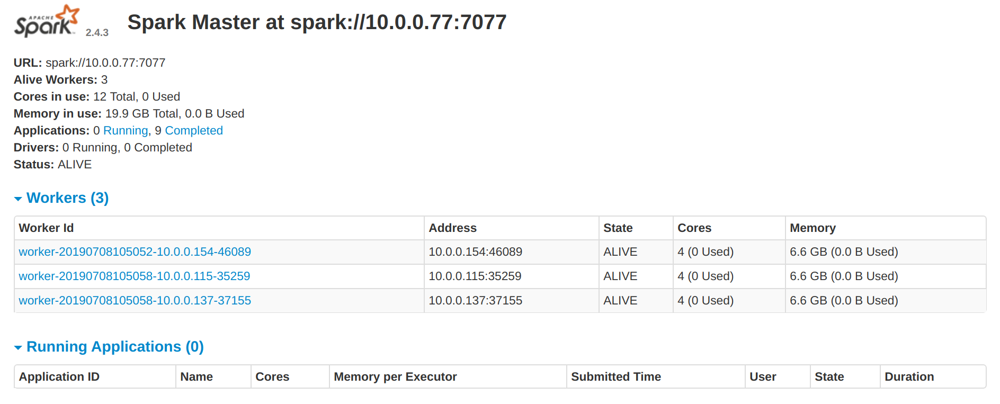
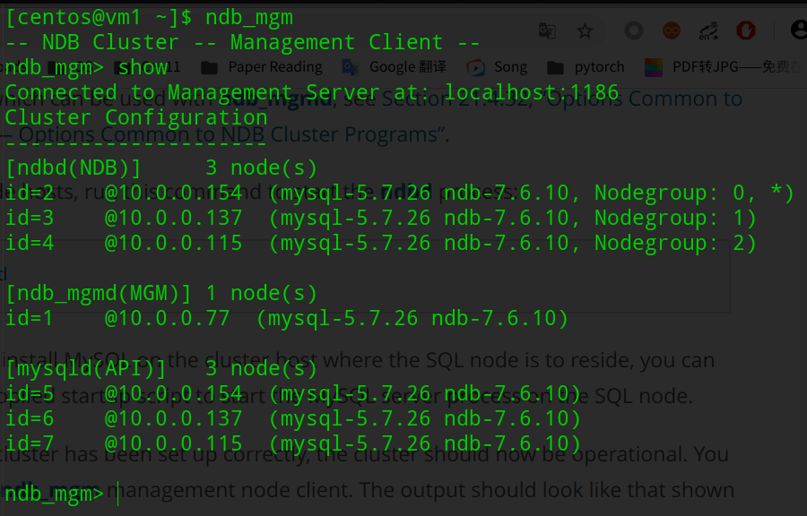

我们的分布式事务处理系统（DTSS）部署在一个由多台虚拟主机组成的集群中，这个集群通过openstack平台统一创建与管理。
以下是该集群的具体配置:
- 节点数及名称: 4 （vm1 vm2 vm3 vm4）
- 节点实例资源：4vCPU + 8GB内存空间 + 80GB硬盘空间
- 四个节点之间可通过集群网络相互通信，节点VM1绑定了浮动ip，外部网络可通过端口30430-30439与VM1通信
分布式事务处理系统由多个组件组成:
- Hadoop集群
Hadoop集群搭建在四个节点上，vm1为namenode，vm2，vm3，vm4为datanode，为Spark集群提供分布式存储以及yarn调度的支持
- Spark集群
Spark集群搭建在四个节点上, vm1为spark-master, vm2, vm3, vm4为spark-worker，本系统使用Spark平台的Spark Streaming组件完成订单数据流的处理及计算
- Kafka消息队列
Kafka集群搭建在vm2，vm3，vm4三个节点上，Kafka消息队列连接web API服务与Spark集群，缓冲订单消息
- Zookeeper集群
Zookeeper集群搭建在vm2，vm3，vm4三个节点上，为Kafka集群提供协调服务，为事务处理系统提供分布式锁服务及配置管理服务
- Mysql集群
Mysql集群搭建在四个节点上，vm1为管理节点，vm2，vm3，vm4为存储节点及SQL节点，为事务处理系统提供数据库存储服务
- Order Receiver Web服务
事务处理系统对用户开放Http接口，receiver服务运行在vm2，vm3，vm4节点上，vm1运行着Nginx作为网关及负载均衡器
Hadoop，Spark这些平台的运行都需要一些基础环境，这里不再详述安装过程，基础环境如下：
Java 1.8.0_212
Scala 2.11.0
事务处理系统中的大部分组件都搭建在分布式集群上，这些集群启动时往往需要通过SSH进行数据传输，执行指令等操作，所以我们首先需要配置四个节点之间SSH的通信。
编辑/etc/host文件使得我们不需要用ip来识别节点
10.0.0.77 vm1
10.0.0.154 vm2
10.0.0.137 vm3
10.0.0.115 vm4
在每个节点上使用指令ssh-keygen -t rsa为每个节点生成密钥对，再将所有节点的公钥一起拷贝到每个节点的.ssh/authorized_keys文件中，这样就实现了四个节点之间SSH免密登录。
从官网下载hadoop-3.1.2.tar.gz安装包，解压至/usr/local/hadoop文件夹
编辑hadoop-env.sh，yarn-env.sh，core-site.xml，hdfs-site.xml，maprd-site.xml，yarn-site.xml等配置文件，配置文件内容不在此展示。
编写slaves文件，添加vm2，vm3，vm4作为datanode
vm2
vm3
vm4
将配置好的hadoop文件夹通过scp分发给vm2，vm3，vm4
使用命令bin/hadoop namenode -format格式化namenode
使用命令sbin/start-all.sh启动hadoop集群，通过jps命令可以看到namenode,datanode正常启动
master（vm1）
[centos@vm1 ~]$ jps
5714 SecondaryNameNode
5963 ResourceManager
5455 NameNode
slaves（vm2，vm3，vm4）
[centos@vm2 ~]$ jps
5255 NodeManager
5131 DataNode
从官网上下载spark-2.4.3-bin-hadoop2.7.tar.gz安装包
在conf/spark-env.sh添加配置配置hadoop目录及Spark集群配置
export SCALA_HOME=/usr/lcoal/scala-2.11.0
export JAVA_HOME=/usr/local/java
export HADOOP_HOME=/usr/local/hadoop
export HADOOP_CONF_DIR=$HADOOP_HOME/etc/hadoop
SPARK_MASTER_IP=vm1
SPARK_LOCAL_DIRS=/home/centos/spark-2.2.1-bin-hadoop2.7
类似Hadoop集群，填写slaves文件配置vm2，vm3，vm4为spark-worker节点
执行命令sbin/start-all.sh启动Spark集群，通过jps命令可以看到master,worker正常启动
master（vm1）
[centos@vm1 ~]$ jps
5714 SecondaryNameNode
28259 Master
5963 ResourceManager
5455 NameNode
slaves（vm2，vm3，vm4）
[centos@vm2 ~]$ jps
5255 NodeManager
5131 DataNode
19101 Worker
浏览器输入ip http://202.120.40.8:30431/可以看到三个Worker节点正常存活

由于最新版本的Kafka内置了Zookeeper，所以我们将这两个组件的搭建过程放在一起。
从官网下载kafka_2.12-2.2.0.tgz安装包，解压
创建~/kafka-logs和~/data/zk目录分别用来存储kafka log及zookeeper数据
修改config/server.properties配置kafka，修改内容如下：
broker.id=1 #broker id
num.partitions=3 #分区数量，一般与broker数量保持一致
listeners=PLAINTEXT://localhost:9092 #修改为本机ip
zookeeper.connect=vm2:2181,vm3:2181,vm4:2181 #三台服务zookeeper连接地址
host.name={vm2/vm3/vm4} #根据自己的ip设置
log.dirs=/home/centos/kafka-logs/ #logs目录
修改config/zookeeper.properties配置Zookeeper，修改内容如下：
#数据目录
dataDir=/home/centos/data/zk
#设置连接参数
tickTime=2000
initLimit=10
syncLimit=5
#broker Id的服务地址
server.0=vm2:2888:3888
server.1=vm3:2888:3888
server.2=vm4:2888:3888
在每个节点的Zookeeper目录下添加myid文件，依次填写broker.id
使用命令bin/zookeeper-server-start.sh config/zookeeper.properties &启动每个节点的Zookeeper
使用命令bin/kafka-server-start.sh config/server.properties &启动每个节点的Kafka，通过jps命令可以看到Kafka,Zookeeper（QuorumPeerMain）正常启动。
[centos@vm2 ~]$ jps
4199 QuorumPeerMain
5255 NodeManager
4712 Kafka
5131 DataNode
19101 Worker
创建系统所需topic~/kafka_2.12-2.2.0/bin/kafka-topics.sh -create --zookeeper vm2:2181,vm3:2181,vm4:2181 -replication-factor 3 --partitions 3 --topic dsgroup
首先在在官网下载mysql-cluster-gpl-7.5.15-linux-glibc2.12-x86_64.tar.gz解压至/usr/local/mysql-cluster文件夹。
Management节点
执行命令cp bin/ndb_mgm* /usr/local/bin将管理节点程序拷贝到PATH目录下
执行命令chmod +x ndb_mgm* 添加可执行权限
创建/var/lib/mysql-cluster/config.ini配置文件，填写Mysql 集群配置,可以看到我们将vm2,vm3,vm4配置为data节点及SQL节点
[ndbd default]
# Options affecting ndbd processes on all data nodes:
NoOfReplicas=2 # Number of replicas
DataMemory=200M # How much memory to allocate for data storage
IndexMemory=30M # How much memory to allocate for index storage
# For DataMemory and IndexMemory, we have used the
# default values. Since the "world" database takes up
# only about 500KB, this should be more than enough for
# this example NDB Cluster setup.
# NOTE: IndexMemory is deprecated in NDB 7.6 and later; in
# these versions, resources for all data and indexes are
# allocated by DataMemory and any that are set for IndexMemory
# are added to the DataMemory resource pool
ServerPort=2202 # This the default value; however, you can use any
# port that is free for all the hosts in the cluster
# Note1: It is recommended that you do not specify the port
# number at all and simply allow the default value to be used
# instead
# Note2: The port was formerly specified using the PortNumber
# TCP parameter; this parameter is no longer available in NDB
# Cluster 7.5.
[ndb_mgmd]
# Management process options:
HostName=10.0.0.77 # Hostname or IP address of MGM node
NodeId=1
DataDir=/var/lib/mysql-cluster # Directory for MGM node log files
[ndbd]
# Options for data node "A":
# (one [ndbd] section per data node)
HostName=10.0.0.154 # Hostname or IP address
NodeId=2 # Node ID for this data node
DataDir=/usr/local/mysql/data # Directory for this data node's data files
[ndbd]
# Options for data node "B":
HostName=10.0.0.137 # Hostname or IP address
NodeId=3 # Node ID for this data node
DataDir=/usr/local/mysql/data # Directory for this data node's data files
[ndbd]
# Options for data node "B":
HostName=10.0.0.115 # Hostname or IP address
NodeId=4 # Node ID for this data node
DataDir=/usr/local/mysql/data # Directory for this data node's data files
[mysqld]
# SQL node options:
NodeId=5
HostName=10.0.0.154
[mysqld]
# SQL node options:
NodeId=6
HostName=10.0.0.137
[mysqld]
# SQL node options:
NodeId=7
HostName=10.0.0.115
SQL节点
执行命令groupadd mysql useradd -g mysql -s /bin/false mysql创建Mysql用户及用户组
执行命令chown -R root . && chown -R mysql data && chgrp -R mysql .添加必要权限
执行命令cp support-files/mysql.server /etc/rc.d/init.d/ && chmod +x /etc/rc.d/init.d/mysql.server && chkconfig --add mysql.server添加mysql服务自启动
编辑/etc/my.cnf配置文件，添加SQL配置
mysqld]
# Options for mysqld process:
ndbcluster # run NDB storage engine
[mysql_cluster]
# Options for NDB Cluster processes:
ndb-connectstring=vm1 # location of management server
执行命令mysqld --initialize sudo systemctl mysql start启动mysql服务
Data节点
执行命令cp bin/ndbd /usr/local/bin/ndbd && cp bin/ndbmtd /usr/local/bin/ndbmtd拷贝可执行文件到PATH目录下
执行命令cd /usr/local/bin && chmod +x ndb*添加可执行权限
编辑/etc/my.cnf配置文件，添加SQL配置
mysqld]
# Options for mysqld process:
ndbcluster # run NDB storage engine
[mysql_cluster]
# Options for NDB Cluster processes:
ndb-connectstring=vm1 # location of management server
进入Management节点，执行命令ndb_mgmd -f /var/lib/mysql-cluster/config.ini启动管理节点
进入Data节点，执行命令ndbd启动数据节点
进入Management节点，执行命令ndb_mgm之后show可以看到已经成功启动mysql集群

执行命令sudo yum -y install nginx安装Nginx
编辑/etc/nginx/nginx.conf文件配置Web服务节点
upstream serviceservers{
server 10.0.0.154:8080;
server 10.0.0.137:8080;
server 10.0.0.115:8080;
}
server {
listen 30438;
server_name localhost;
root /usr/share/nginx/html;
# Load configuration files for the default server block.
include /etc/nginx/default.d/*.conf;
location / {
proxy_pass http://serviceservers;
}
error_page 404 /404.html;
location = /40x.html {
}
error_page 500 502 503 504 /50x.html;
location = /50x.html {
}
}